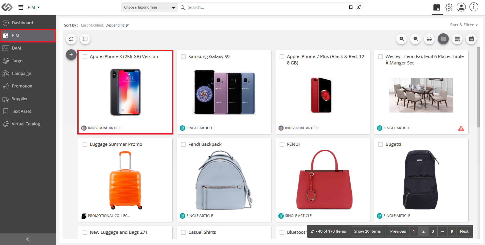
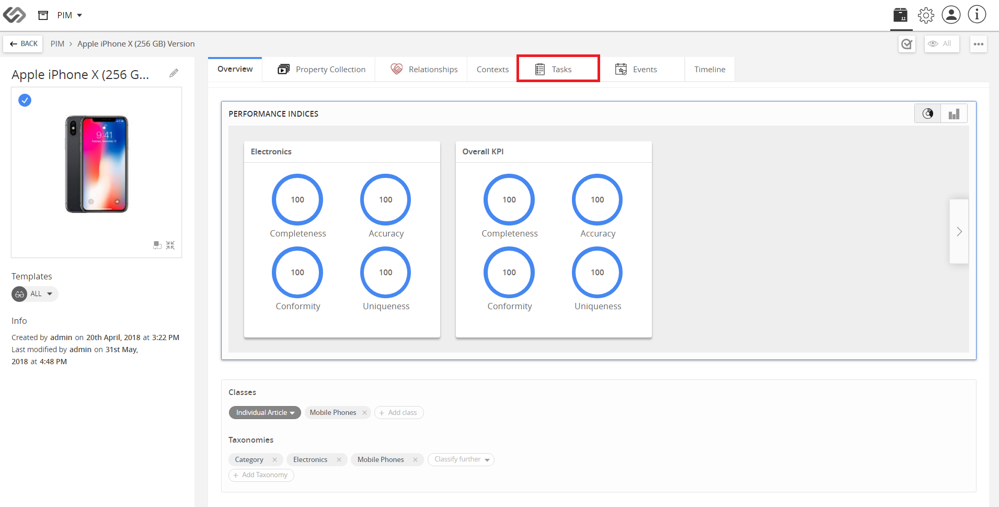
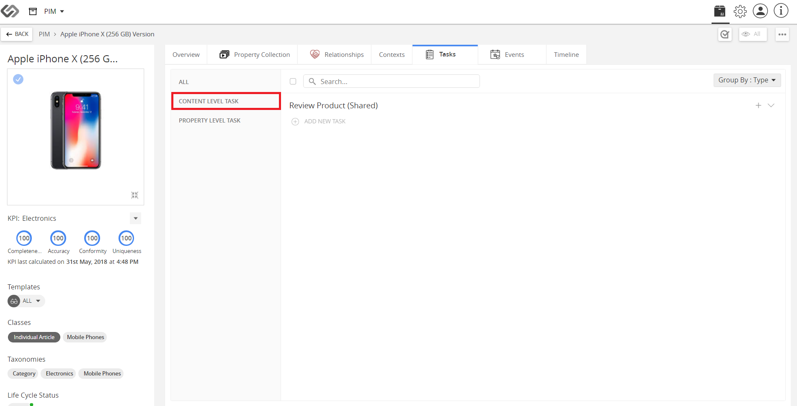
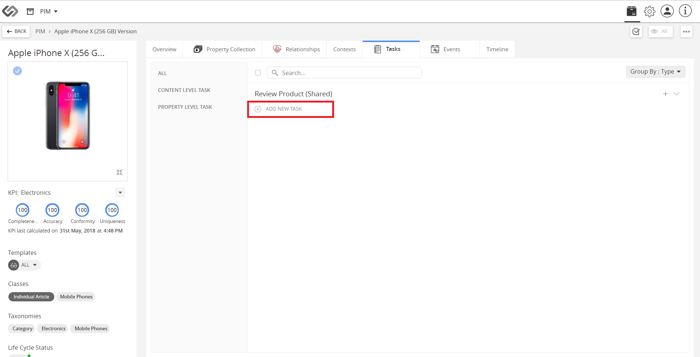
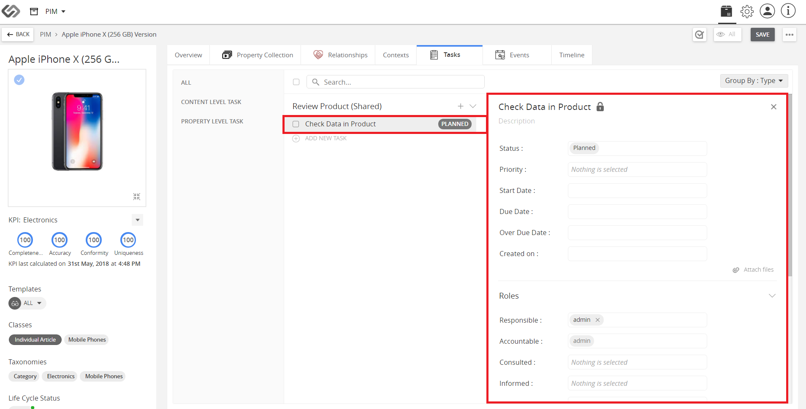
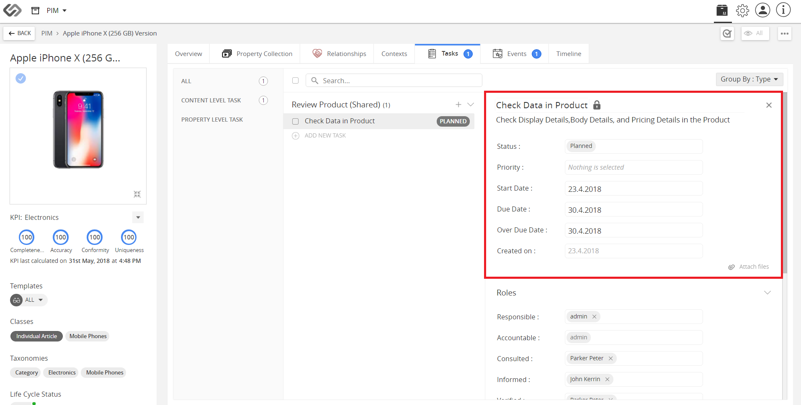
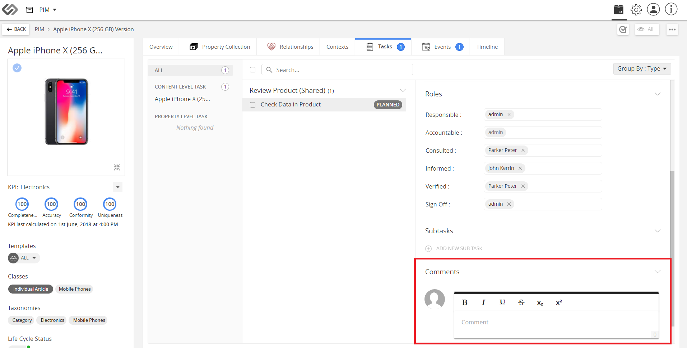

Tasks and Annotations
The Tasks and Annotations feature allows users to add tasks in the system. It also allows comments or notes to be added to the tasks.
| Key Term: |
- Product Information Management (PIM): facilitates the central management and maintenance of an enterprise’s product data, content or any related information.
|
| Description: |
- Tasks are action events created for an article. These tasks are intended for a user, and in the system, the tasks contain a description of what action should be done.
- The Tasks feature has a comment section where users can put comments or questions regarding the task.
- The Tasks feature also helps a user schedule different actions in the system.
|
| Related topics: |
|
| Application: |
Tasks are created for action events related to articles or assets in the system. These tasks can be for any event dedicated to any user.
Tasks allow comments or notes from other users that will give more information on the action needed.
Example:
A task is created to check the details of an article. The task is called Check Data in Product.
The task can have a note from a different user saying “Check the properties like Display and Pricing Details”.
|
How-to: Tasks and Annotations
To create tasks or add comments to the tasks, follow these steps:
- Go to PIM and select a product.

- Click on the Tasks tab to create a new task.

- Select the Content Level task.

- Click on Add New Task button to create a new task.

- Enter the name of the new task then click on the Save button.

- Add the Description, Comments, and other details to the task created then click on the Save button.

